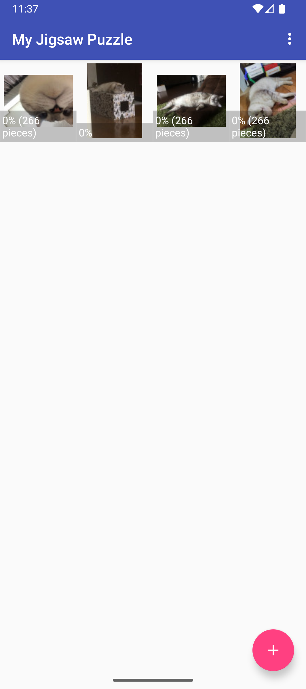
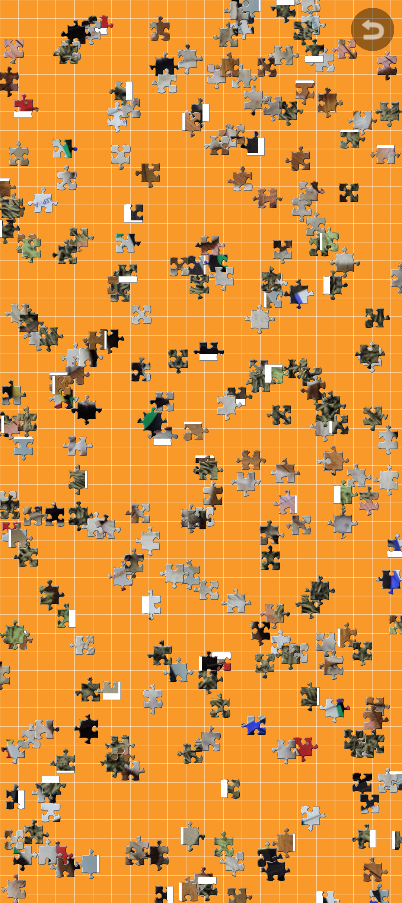
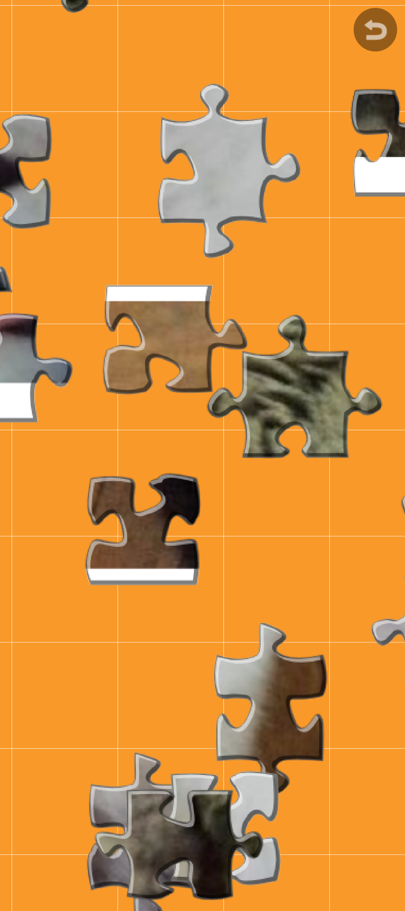
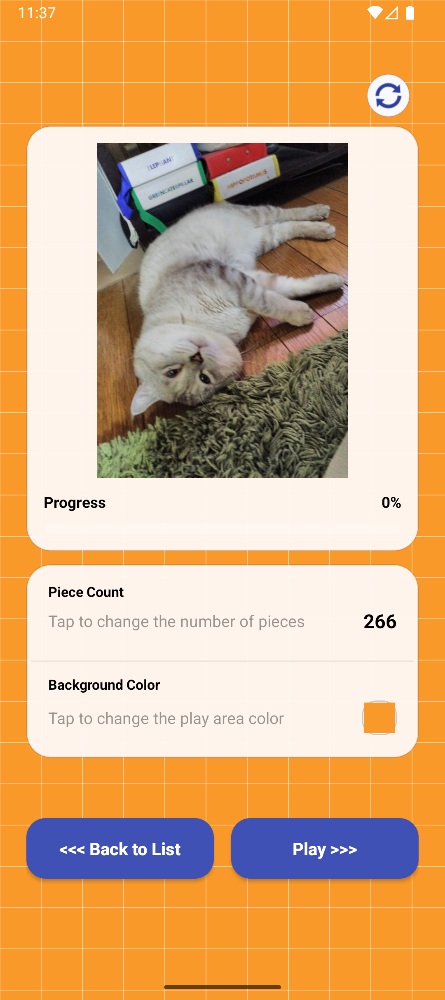

My Jigsaw Puzzle
端末内の画像からジグソーパズルを作って遊べる Android アプリです。
プレイ中の状態は自動保存され、次回は中断位置から再開できます。
主な機能
- 一覧画面でパズルを作成・管理
- ゲーム画面でドラッグ、ズーム、パン操作
- 設定パネルでピース数と背景色を変更
- プレイ領域の状態を自動保存し、中断・再開に対応
- 進捗表示とゲームリセット機能
- 端末内保存のみで、サーバー送信なし
スクリーンショット




本ページの説明は開発中の最新版を基準にしています。Google Play の公開内容と差分がある場合は、
更新履歴をご確認ください。